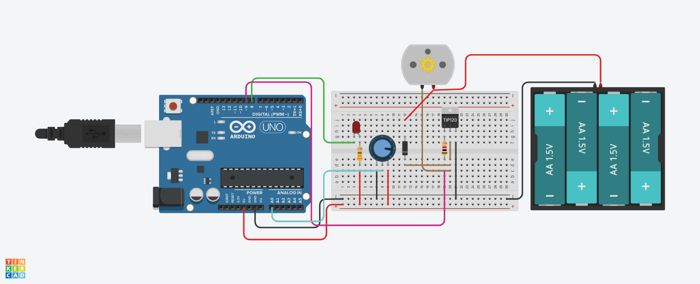
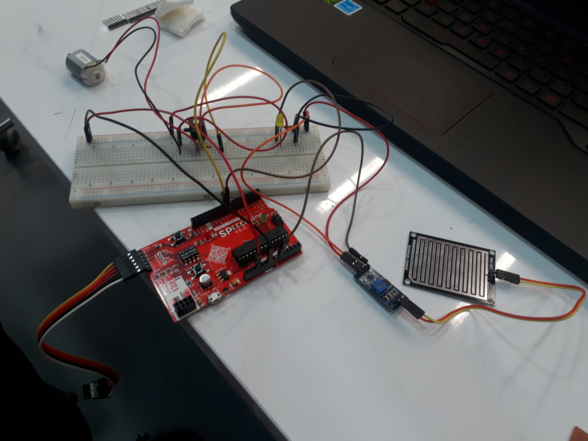
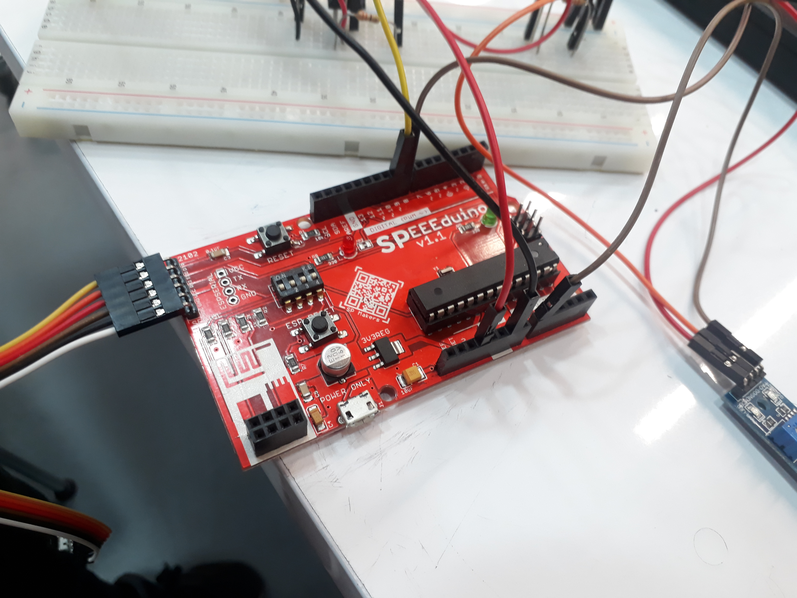
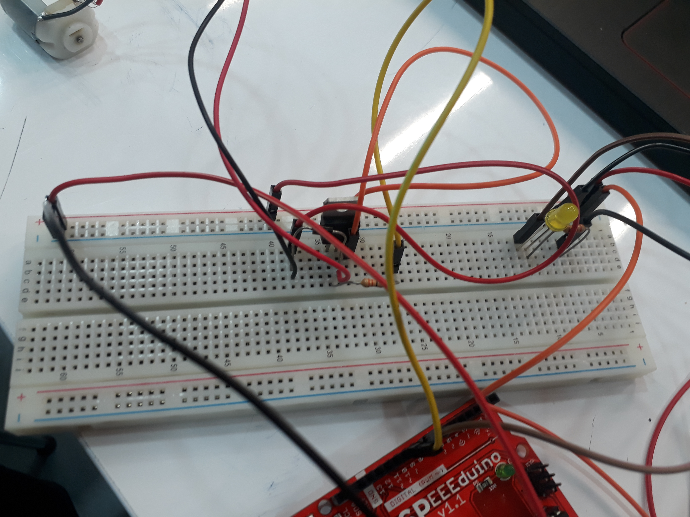
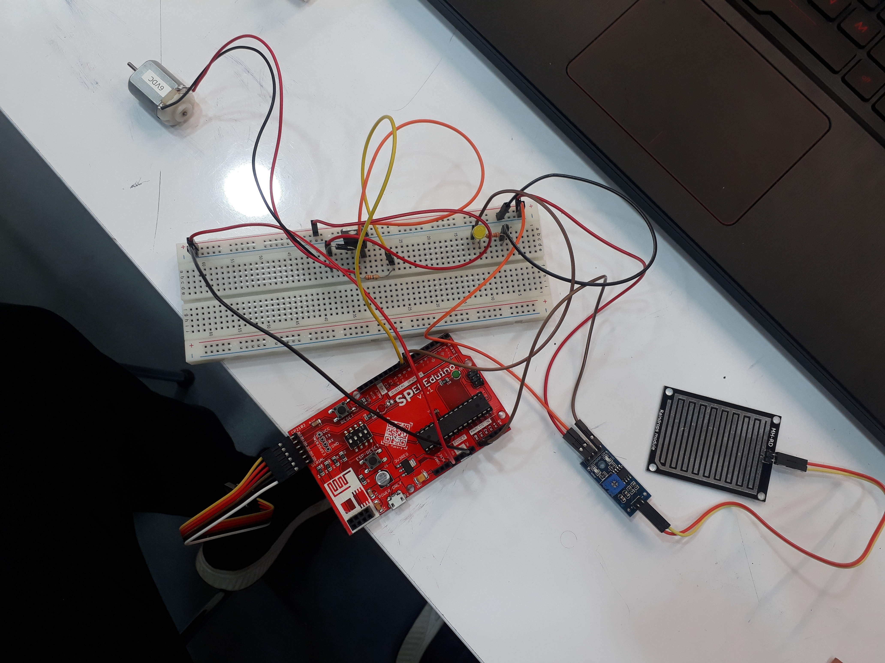
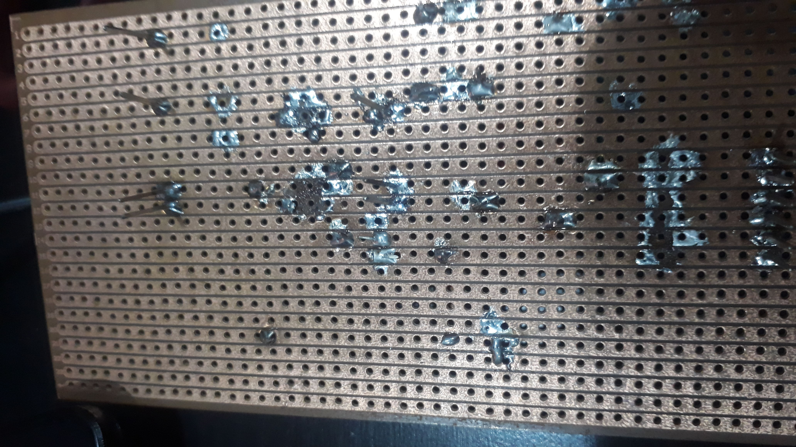
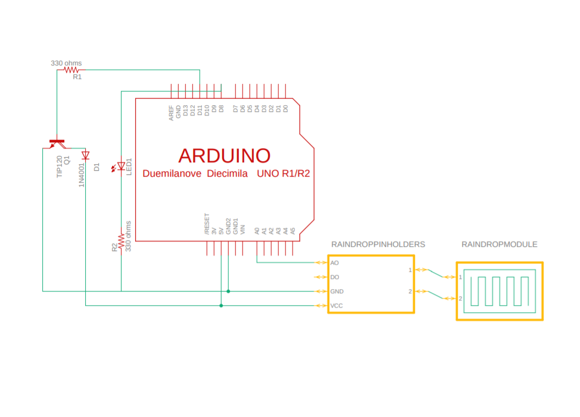

Planning
I first started experimenting with potentiometers on TinkerCAD, initially making an idea about using potentiometer for my CA2, however, I decided to make use of
the mini project my friend Sorenson and I did over the long holidays after the end of our 1.2 Semester which is a servo motor controlled by a rain sensor.
I changed from a servo motor to a DC motor in order to accomodate the function of a transistor which helps to control the actuator which is the DC motor. The initial function of such a circuit would be to help design
an automated system for trains or even automated cars in the near future to drive slower in rainy weather. Due to the lubrication caused by the rainwater be it on
the train tracks or roads, this helps to ensure the user's safety by comprimising the speed of the vehicle as more rain begins to pour down. I also plan to fit in an
LED in order to warn the train operator/car driver that the vehicle is starting to slow down in order to counter the rainy weather.
And without wasting time, I decided to put my idea into TinkerCAD.
TinkerCAD Simulation
During the TinkerCAD Simulation, I encountered issues such as having high negative rpm which is very unusual and after some help from friends in EA, they simply
added a flyback diode(1N4001) to help focus the direction of the voltage which decreased the amount of RPM and making the reading become positive, which gave me
confidence that my idea could work.

Judging from the circuit, I may need to buy some components from Continental Electronics in order to make my circuit as some of them are not available in the FabLab.
Hence, I needed to get started on work quickly and buy those components with some spares, should they fail during testing. However, this project in my opinion, is so
far a workable and potentially useful idea in the future considering upcoming technologies such as automated driverless cars which could use systems such as this
in order to ensure the safety of the user.
Breadboard Testing
Using the FabLab at T1442, to get my materials, I went out to get a 1N4001, two 330 ohm resistors, a DC Motor and a Red 5mm LED. I personally bought a TIP120
transistor, 1 set each of F-F, M-M and F-M jumper wires, 1 raindrop module as well as my own soldering kit, as the Fablab did not have any of them available.
Working with friends, I was able to get my circuit working exactly just like the TinkerCAD simulation, with a sufficient amount of positive RPM, and the DC Motor speed
decreases as more water is poured on the rain drop module. However, through advices from my friends in the school of EEE, I found out that it is not really that necessary
to have an external power source such as a 4x1.5v Battery in order to run my circuit. They instead, adviced me to run it using just the Arduino 5v connection, which I took
in, in order to save time and effort. I initially tested it with an external power source on the circuit as seen in the previous header. However, I feel that this would
provide a more cost effective and simplified solution to have my circuit running especially in such a short amount of time.

Overall Breadboard Design

SPEEEduino View

Breadboard View

Overall Top View
As I began to start work and gather materials for soldering, some of my friends from EA warned me that the soldering process in this project was going to be rather
tedious. I took that advice with as much caution as I can. With the help and advice of some of my friends from EEE who are more experienced in soldering components
to stripboard, they helped to teached me about the connection and the layout of stripboards which was useful knowledge for me to better understand how to solder my parts
onto the stripboard. I couldn't be more thankful for their help as I begin to take on the toughest part of the whole project which I feel that I may have to take certain
gambles to try and make whatever I can to showcase my project.
Stripboard Soldering
Due to the lack of time constraint and my onset fever and cold, I was only able to solder as much as my components and some of the wiring for testing on the stripboard.
I had to focus on the soldering at home which I was able to solder to the point my LED started working but my DC Motor wasn't running. However, after some testing, I
realised some of the copper was getting burnt out and as a result, some of the connections were severed and I had to make use of some of the other connections in order to
accomodate this error. As a result, I was able to get my DC Motor running but my LED was nowhere near showing any lighting and the RPM of the DC Motor was too much despite
the installment of the 1N4001 diode. Hence, I needed to design another idea as soon as possible with the little time I had left.

Topside of Project in Progress

Backside of Project in Progress
However, I ran through some issues regarding my soldering as the copper connection in the two lines has caused a major discontinuity which resulted in my two important
pins, my 5V and GND connection to be short circuited, as a result, I had to resolder my whole circuit in order to avoid this discontinuity. This definitely cost me some
time and effort in order to account for such an error and gave me a lost of sleep through the night.


I got started on removing the solders of certain wires and connections in order to rectify this error. The digital pin outputs and LED connection had to be resoldered
to other points on the stripboards in order to fit in with the 5V and GND connection. I carried on this work till 5am on the morning of the due day.
After a morning waking up with a fever,a cold and 3 hours of sleep,I rushed off to work as I try to meet the deadline. I asked friends all around for advices and through their help,
I was able to get my circuit working, however due to a soldering mishap which caused a little more discontinuites in my circuit, my LED could not respond and as I had
no spare LEDs or stripboards around. And as my desoldering pump was jammed due to blockage, I was unable to carry on anymore desoldering works which left me in a disadvantegeous
position. With no other options available and time running out, I had to present this product with just the DC Motor being controlled by the rain sensor which is technically,
the heart of the project.
Final Product(For Marking)


Video of Final Soldered Product CA2
After quite a while, I managed to solder this much of my product despite the shortcomings of the LED, being able to show the DC Motor being controlled by the rain
sensor was what I believe to be a top priority in ensuring that my CA2 product is a success. Personally, I feel that it is incomplete due to the absence of the LED
acting as a warning system to warn the operator that the train is slowing down, I hope that in the near future, I could revisit this project and eventually make it grow
into a commercially viable idea in the near future for automated transport systems.
Below I have attached my source code for the Arduino Software.
CA2 Source Code Arduino
And below is a picture of my schematic and the pdf download.

CA2 Project Schematic PDF Download